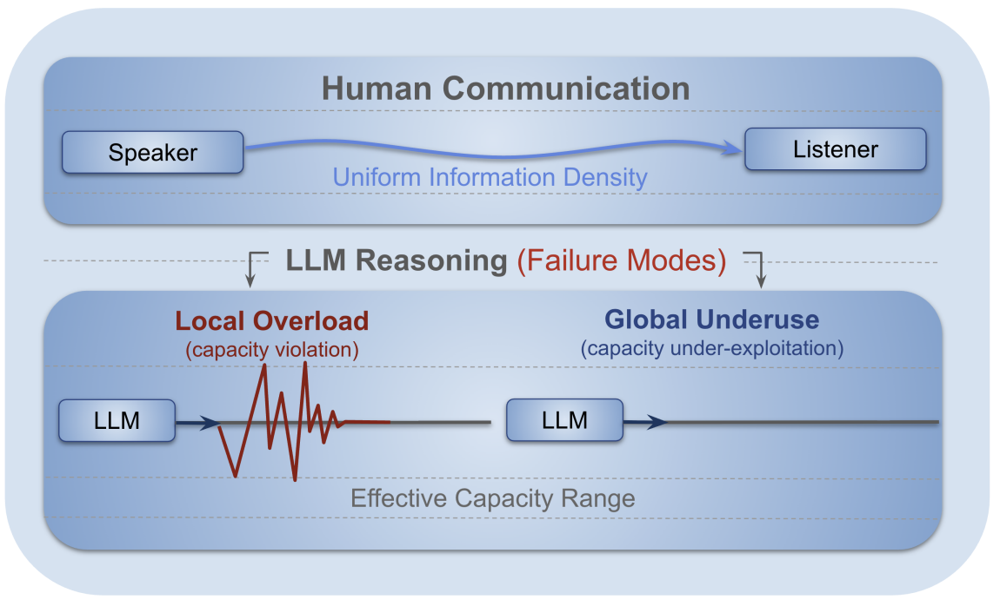

1Yonsei University · 2OneLine AI
mjgwak@yonsei.ac.kr, jaehyungk@yonsei.ac.kr
The Uniform Information Density (UID) hypothesis proposes that effective communication is achieved by maintaining a stable flow of information. In this work, we revisit this principle in the context of Large Language Model (LLM) reasoning, asking whether step-level uniformity reflects reasoning quality. To this end, we introduce a novel framework to quantify uniformity of information flow at both local and global levels, using an entropy-based stepwise density metric. Across experiments on seven reasoning benchmarks, we see a counter-intuitive pattern: high-quality reasoning exhibits smooth step-by-step transitions (local uniformity) and structured, non-uniform information flow at the trajectory level (global non-uniformity). The results demonstrate that these uniformities outperform alternative internal signals as predictors of reasoning quality, and such divergence with human communication is not a model deficiency, but a byproduct of distinct objectives between human communication and LLM reasoning.
Key finding. Successful LLM reasoning aligns with high local uniformity and low global uniformity in stepwise entropy—differing from human UID, yet useful for Best-of-N selection and failure prediction.

Reasoning as information flow. Human communication distributes information smoothly to respect channel capacity, enabling successful understanding.
LLM reasoning transmits information across reasoning steps; failures arise from local overload (sharp spikes) and underuse (flat trivial trajectory).
@article{gwak2025revisiting,
title={Revisiting the Uniform Information Density Hypothesis in LLM Reasoning Traces},
author={Gwak, Minju and Son, Guijin and Kim, Jaehyung},
journal={arXiv preprint arXiv:2510.06953},
year={2025}
}